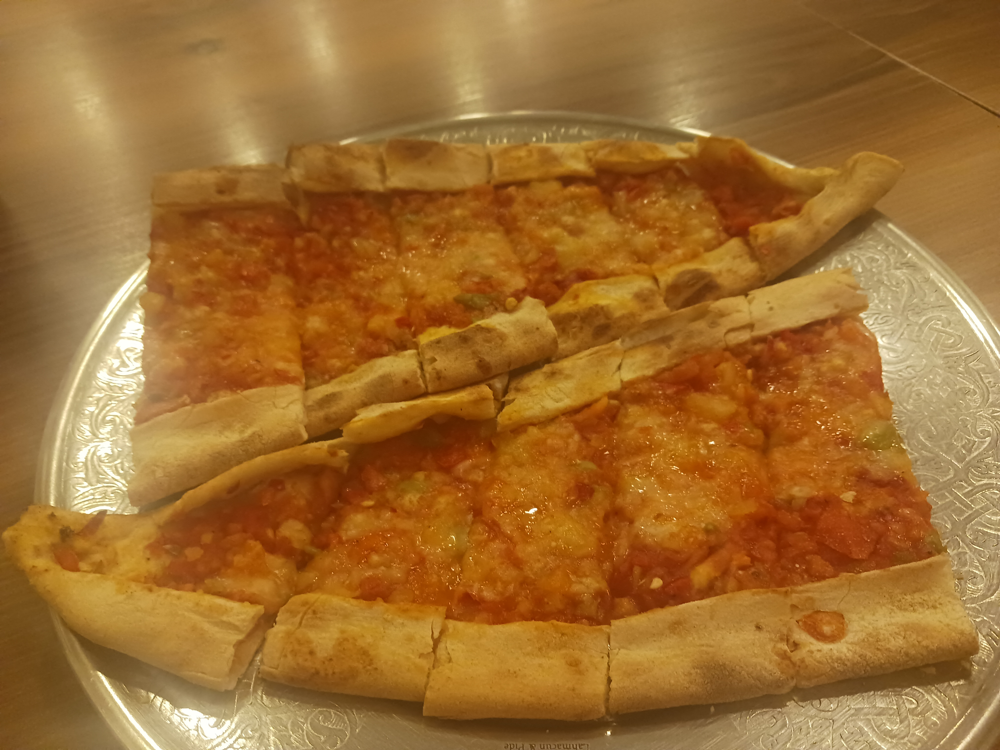
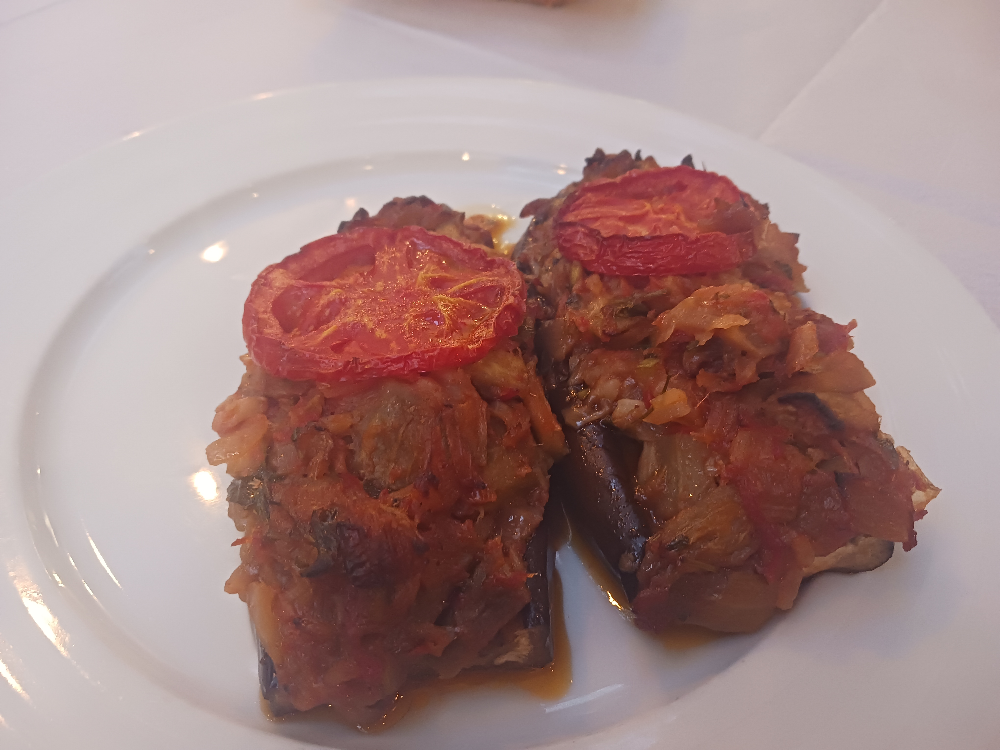
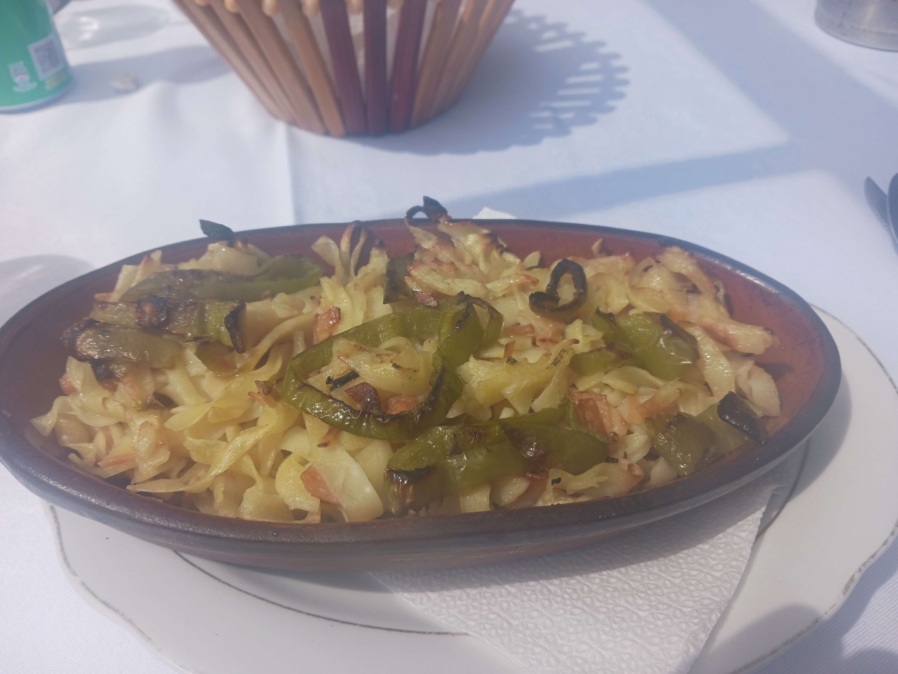
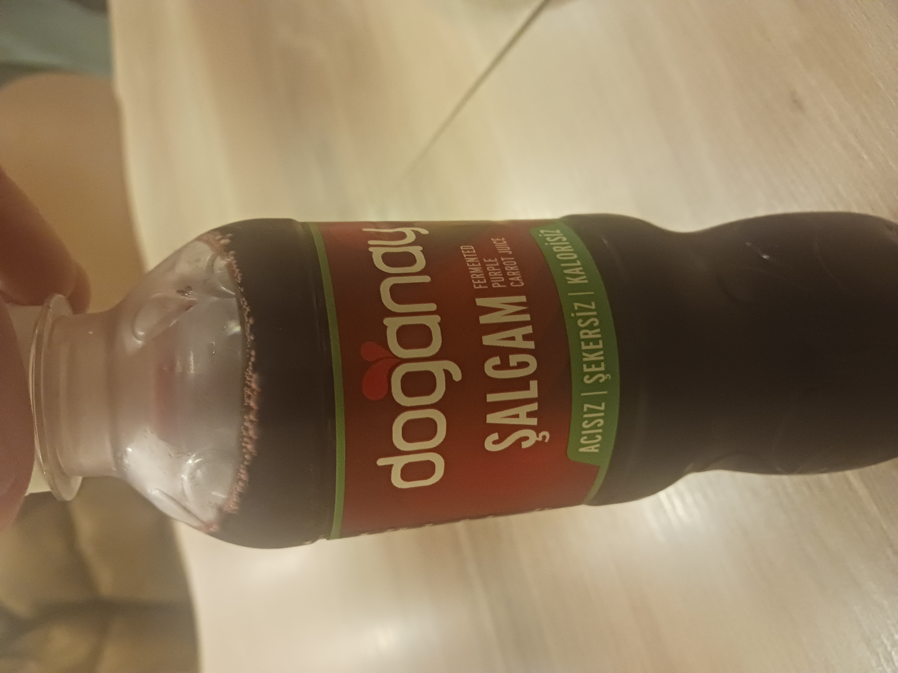
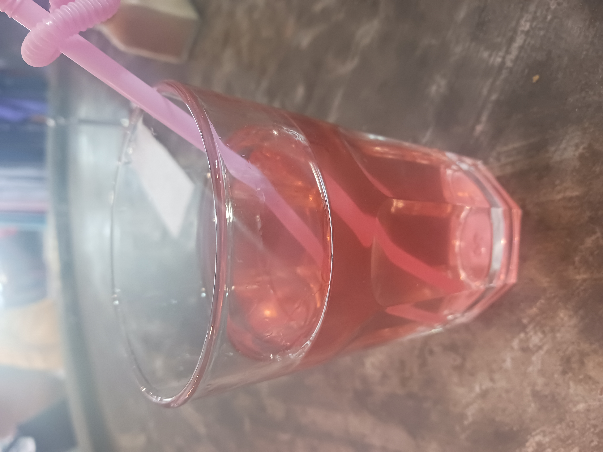
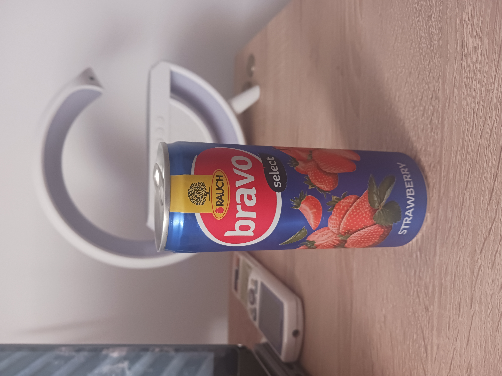
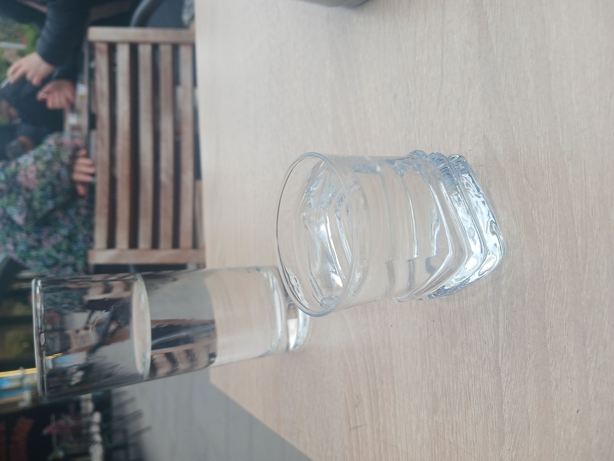
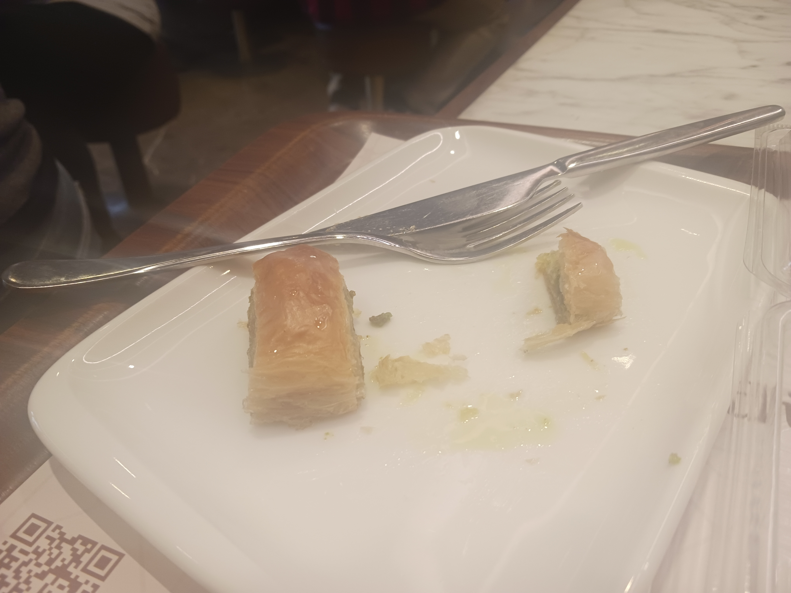
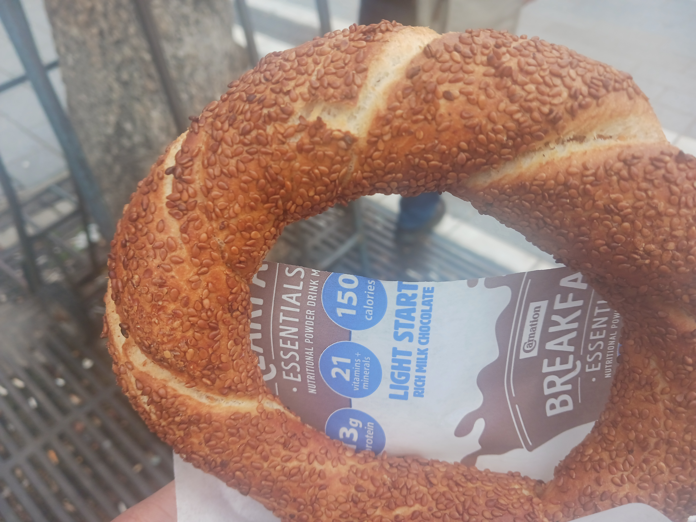
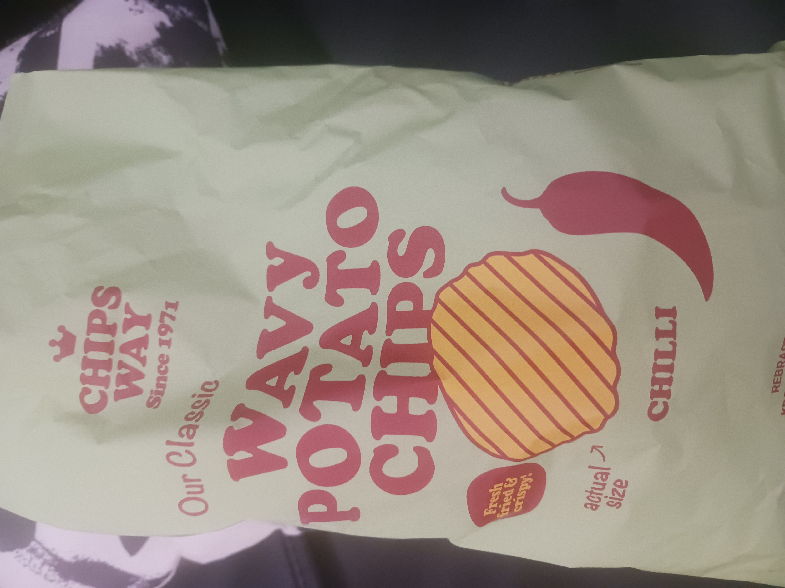

Food and Drink
A sampling of yummy regional dishes and beverages. Descriptions read from left to right.
Food




- Pide, a warmed flatbread. Add cheese and toppings and you've basically got an ultra thin-crust pizza.
- Stuffed eggplant, a regional favorite. The restaurant, Oda's Garden, is a certified "hole in the wall" —
I would have missed it if I wasn't looking for it (those places always have the best food).
- Handmade pasta at Emiliano's, right behind
Krujë Castle.
The restaurant was a little ways away from the main road (the owner flagged us down on our way to a different restaurant),
but worth the slight detour.
- Dinner at
Fresh Garden
after visiting Krujë Castle (that was a good day for food). Probably the best thing I ate this entire trip,
made even better with good company.
Drinks




- Şalgam suyu: literally, "turnip water". Also described as pickle juice, carrot juice, and beet juice — the last flavor
was the most accurate to me. This had a rather earthy taste, which was an adjustment (every purple drink I've ever had
has been sweet) but very enjoyable.
- Strawberry juice I had while waiting for my entree (potato-stuffed peppers that were also, but not
quite as good as, this juice). Bendy straw not requested, but amusing and a good complement.
- Bravo, which tastes like a cross between juice and nectar. The name alone made me want to try it, and it did
not disappoint.
- Rakia, a regional alcohol similar to brandy. The water came with the rakia for free — for reference, you generally
have to pay for water in this part of the world, so that should give you a sense of how strong this drink is. My tour guide
was unfazed, but he had his first taste of rakia at five years old, so maybe he's just used to it by now.
Snacks



- Baklava: I associated baklava with Greece, but apparently it's originally from Türkiye? Regardless of its actual origin, it was
delicious. I almost finished it before I remembered I wanted to take a picture.
- Simit: Turkish bread coated in sesame seeds. Highly recommended, and lived up to the hype.
- A new brand of potato chip I tried before I saw any advertising for it. Crunchy and with just the right amount of flavor (and
didn't leave my fingers stained red afterward).